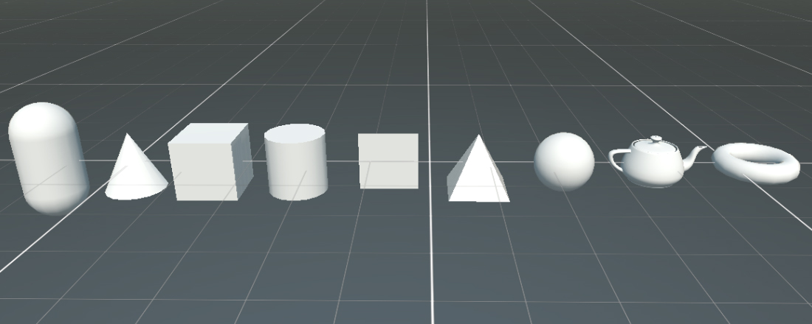
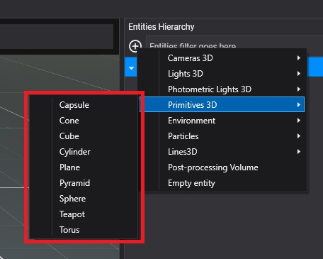
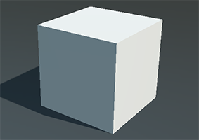
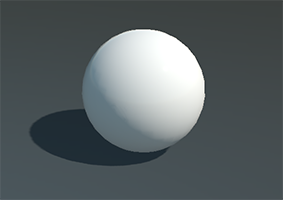
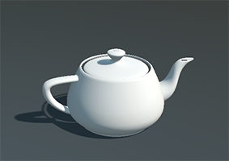
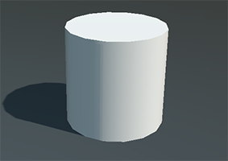
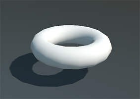

Primitives

Evergine has a 3D primitives collection that you can use for prototyping proposes. The primitives are easier and faster to use so they are very useful when you are making tests or your creating a prototype scene.
Primitive collection:
- Capsule
- Cone
- Cube
- Cylinder
- Plane
- Pyramid
- Sphere
- Teapot
- Torus
The main difference of using primitives instead of a Model is that in that case the Mesh is generated procedurally, instead of obtaining it from an asset. It allows you to parametrice the way this mesh is generated.
Create primitive from Evergine Studio
From the Entity Hierarchy panel click on button and go to Primitives 3D submenu.
button and go to Primitives 3D submenu.

Create primtive from code
To create a primitive only need to create an entity with the following components:
protected override void CreateScene()
{
var assetsService = Application.Current.Container.Resolve<AssetsService>();
var material = assetsService.Load<Material>(EvergineContent.Materials.DefaultMaterial);
Entity cubeEntity = new Entity()
.AddComponent(new Transform3D())
.AddComponent(new MaterialComponent() { Material = material })
.AddComponent(new CubeMesh()) // A cube primitive
.AddComponent(new MeshRenderer());
this.Managers.EntityManager.Add(cubeEntity);
}
Tip
To create primitive only need to change CubeMesh component by CapsuleMesh, ConeMesh, CylinderMesh, PlaneMesh, PyramidMesh, SphereMesh, TeapotMesh or TorusMesh component.
Cube Parameters

The component for create this primitive is CubeMesh
| Parameter | Description |
|---|---|
| Size | The size of the cube. Must be greater than 0. |
| UVHorizontalFlip | Value indicating whether to flip the horizontal texture coordinate. |
| UVVerticalFlip | Value indicating whether to flip the vertical texture coordinate. |
| InitialU | The horizontal texture coordinate offset. |
| InitialV | The vertical texture coordinate offset. |
| UTile | The horizontal texture coordinate scale factor. |
| VTile | The vertical texture coordinate scale factor. |
Sphere Parameters

The component for create this primitive is SphereMesh
| Parameter | Description |
|---|---|
| Diameter | The diameter of the sphere. Must be greater than 0. |
| Tessellation | The tessellation of the sphere. Must be greater than 3. |
| UVHorizontalFlip | Value indicating whether to flip the horizontal texture coordinate. |
| UVVerticalFlip | Value indicating whether to flip the vertical texture coordinate. |
Plane Parameters

The component for create this primitive is PlaneMesh
| Parameter | Description |
|---|---|
| PlaneNormal | The normal of the plane. Availables values:
|
| Width | The width of the plane. Must be greater than 0. |
| Height | The height of the plane. Must be greater than 0. |
| TwoSides | Value indicating whether the plane has two sides. By default botton face of the plane is not generated. |
| UVHorizontalFlip | Value indicating whether to flip the horizontal texture coordinate. |
| UVVerticalFlip | Value indicating whether to flip the vertical texture coordinate. |
| InitialU | The horizontal texture coordinate offset. |
| InitialV | The vertical texture coordinate offset. |
| UTile | The horizontal texture coordinate scale factor. |
| VTile | The vertical texture coordinate scale factor. |
Teapot Parameters

The component for create this primitive is TeapotMesh
| Parameter | Description |
|---|---|
| Size | The size of the teapot. Must be greater than 0. |
| Tessellation | The tessellation of the teapot. Must be greater than 3. |
Capsule Parameters

The component for create this primitive is CapsuleMesh
| Parameter | Description |
|---|---|
| Height | The height of the capsule. Must be greater than 0. |
| Radius | The radius of the capsule. Must be greater than 0. |
| Tessellation | the tessellation of the capsule. Must be even. |
Cone Parameters

The component for create this primitive is ConeMesh
| Parameter | Description |
|---|---|
| Height | The height of the cone. Must be greater than 0. |
| Diameter | The diameter of the cone. Must be greater than 0. |
| Tessellation | The tessellation of the cone. |
Cylinder Parameters

The component for create this primitive is CylinderMesh
| Parameter | Description |
|---|---|
| Height | The height of the cylinder. Must be greater than 0. |
| Diameter | The diameter of the cylinder. Must be greater than 0. |
| Tessellation | The tessellation of the cylinder. Must be greater than 3. |
Pyramid Parameters

The component for create this primitive is PyramidMesh
| Parameter | Description |
|---|---|
| Size | The size of the pyramid. Must be greater than 0. |
Torus Parameters

The component for create this primitive is TorusMesh
| Parameter | Description |
|---|---|
| Diameter | The diameter of the torus. Must be greater than 0. |
| Thickness | The thickness of the torus. Must be greater than 0. |
| Tessellation | The tessellation of the torus. Must be greater than 3. |